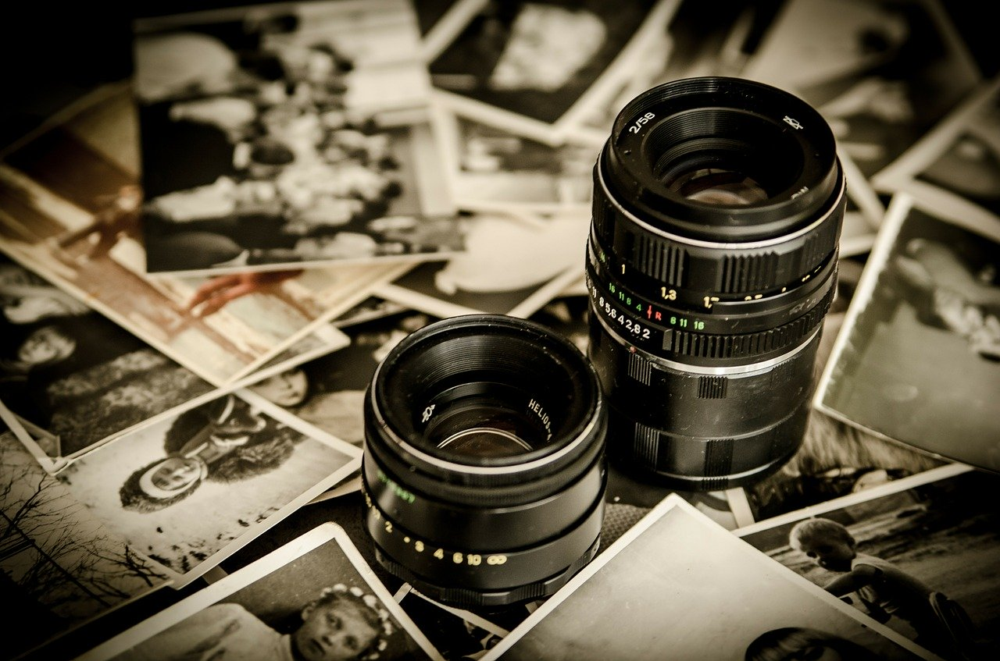
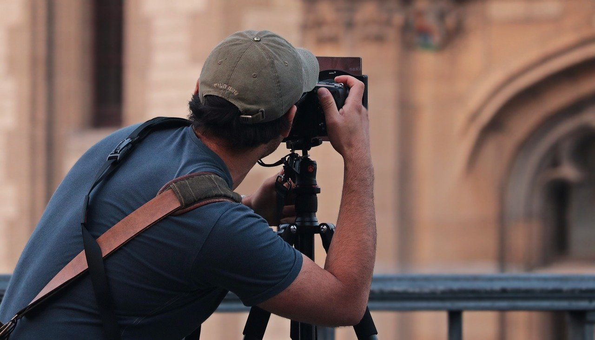
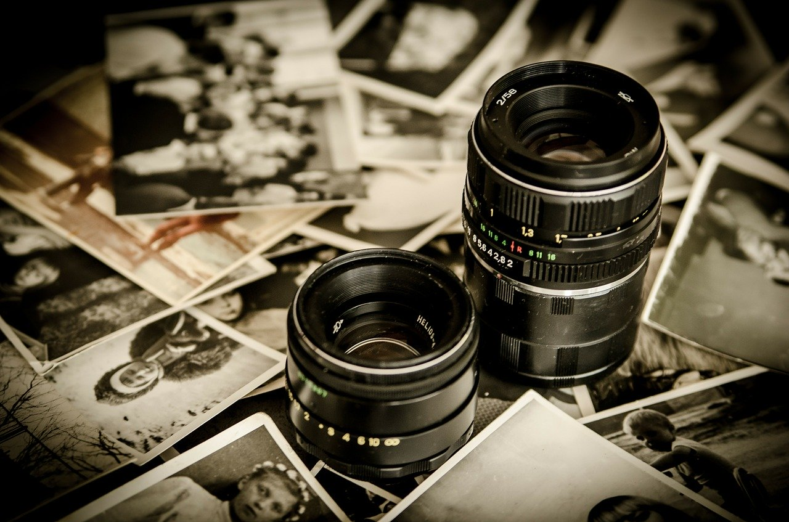
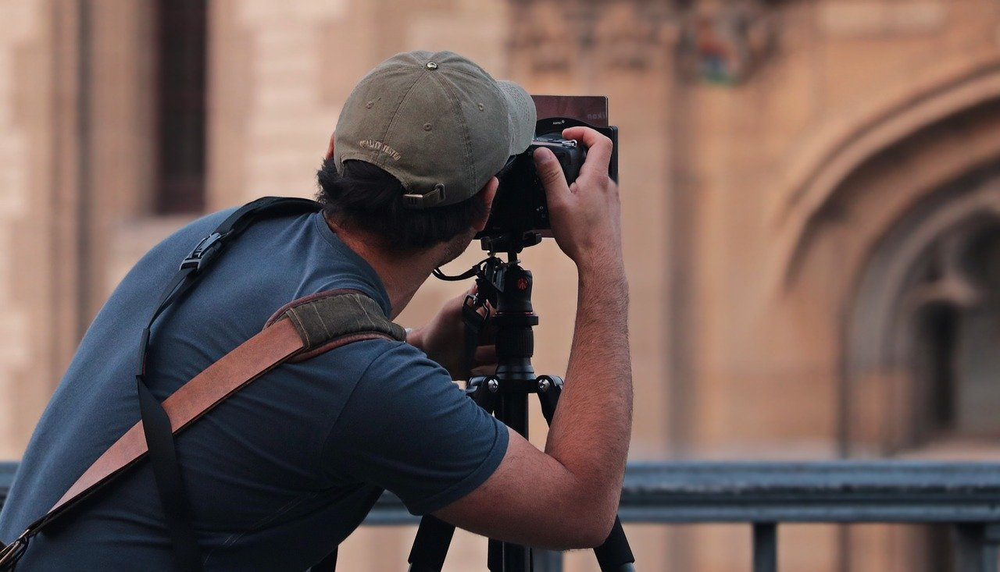
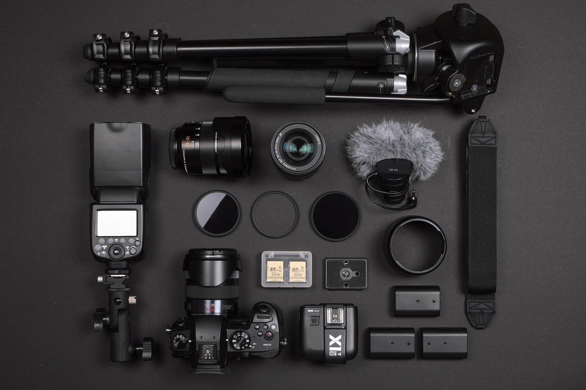
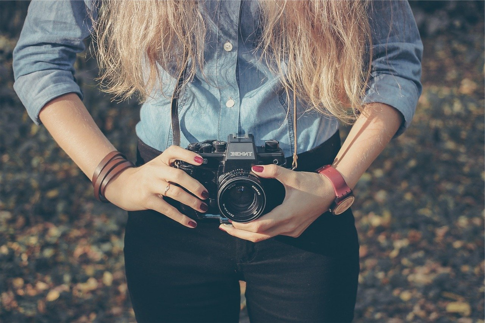
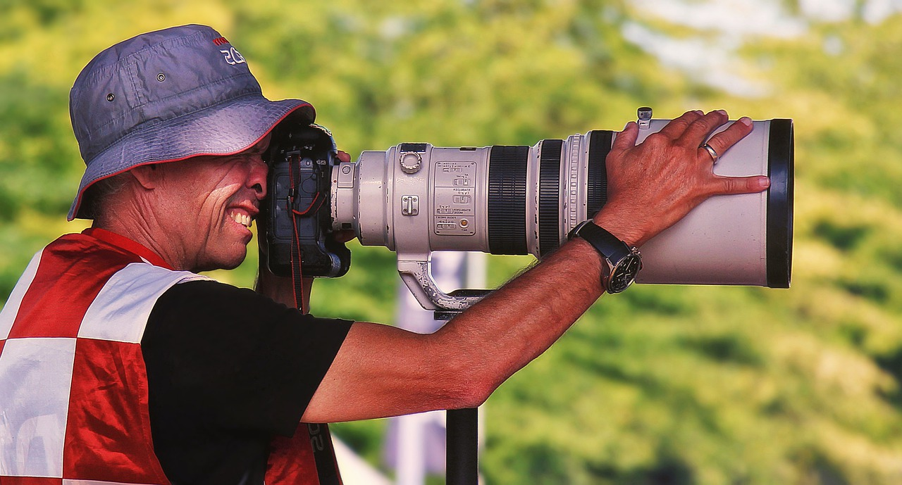

Photographer
 






Duties and types of photographers.
- The exclusive right of photographers to copy and use their products is protected by copyright. Countless industries purchase photographs for use in publications and on products. The photographs seen on magazine covers, in television advertising, on greeting cards or calendars
- Many people upload their photographs to social networking websites and other websites, in order to share them with a particular group or with the general public.
- As in other arts, the definitions of amateur and professional are not entirely categorical.
- An amateur photographer takes snapshots for pleasure to remember events, places or friends with no intention of selling the images to others
- A professional photographer is likely to take photographs for a session and image purchase fee, by salary or through the display, resale or use of those photographs
- There are major companies who have maintained catalogues of stock photography and images for decades, such as Getty Images and others. Since the turn of the 21st century many online stock photography catalogues have appeared that invite photographers to sell their photos online easily and quickly, but often for very little money, without a royalty, and without control over the use of the photo, the market it will be used in, the products it will be used on, time duration, etc